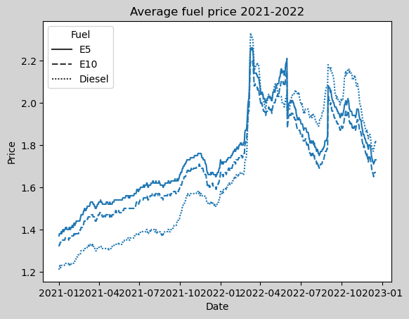
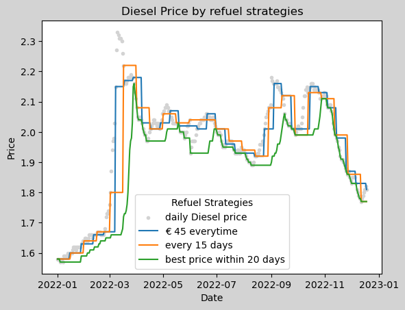
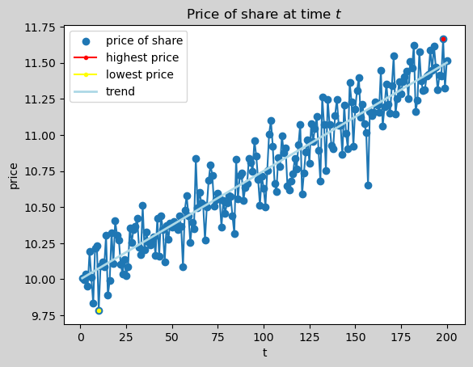
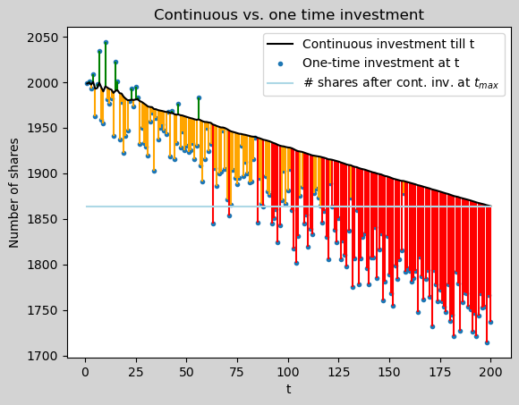
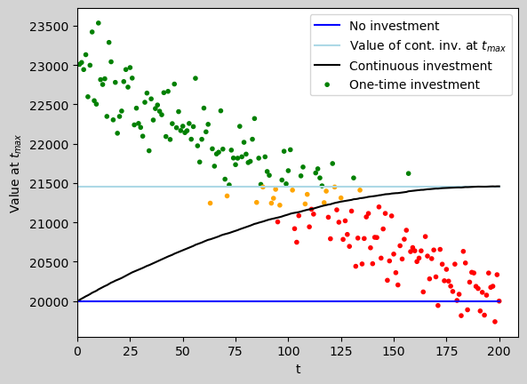

[DRAFT - WORK IN PROGRESS]
Once upon a time, in the last century, a teacher of mine was complaining about the latest increase of the gasoline price. The old man was finishing his complains with a misogynic joke about his wife:
🐗: The gas price went up a gain. It doesn’t matter for my wife, though. She always refuels for 10 bugs. Hahaha.
Besides he shouldn’t have talked like this about his wife, the idea of always spending the same amount of money on the gas station to avoid price raises seamed to be pretty funny. I since used a variation of this da(e)d joke every now and then, like “I always refuel for 10 bugs, lol.” and you certainly have heard this joke often, too.
⏩ Now, 25 years later …
I was driving with my wife to a party and she realized that I’ve filled up the car after shopping in the afternoon. She was very happy that she wouldn’t need to stop at the gas station during the upcoming week. I told here proudly that the price for gas was low and I saved 30 ct per liter compared to four weeks ago. Once again I quietly had to think about this bad joke. Suddently, when I was just about to grin, I was struck by a though: “Is it possible that the person, who is always refueling for exactly 10 bugs, is right and the others, that are laughing about this strategy, are actually the idiots?!”.
This thought come up because the night before I’ve watched some YouTube videos about investment strategies. One example1 was to follow a saving plan and put the same amount of money into funds on a regulare basis, say 100 Euro every month. In the interview a question come up, what would happen when the market goes down and the portfolio looses value. The answer was pretty simple: If you invest regularely then you hit the market when it goes up the one day and when it goes down the other day. So the volatility doesn’t matter that much on the long run. This intuativally made sense. The constant investing smoothes out the volatility. Since you can’t predict the stock prices, it’s hard to time the market, hence predicting when buying is cheap over a short period of time.
So, I left the party with two thought to investogate: - 1. What is a suitable refueling strategy? - 2. Is my intuition on about the constant fund investment reasonable?
Let’s start with the car.
Refueling Strategies
These are the average prices for Fuel in Germany from January 2021 to November 2022 from (Destatis) (2022).
Data source: (Destatis) (2022)
2021 was a pretty normal year, fuel prices slightly increased, with some noisy up and downs. 2022 was really crazy with high raises and steep dives of the fuel price.
Since our car is using Diesel I’ll do the following simulations for Diesel. Our car is driving appoximatally 12,000 km per year and has a consumption of 6.4 liter per 100 km. We assume we drive the same distance with the same consumption on everday of the year.
12,000 km/year
0.064 l/km
2.104 l/day
We’ll compare three different refueling strategies:
Strategy 1: Fixed payment
We refuel for exactly € 45 everytime the tank has less than 10 liters. The tank has a capacity of 55 liters, hence fuel for € 45 fits when we refuel. This referse to the “joke” strategy.
Strategy 2: Regularly, fixed amount of fuel
Since we are comsuming the same amount of fuel everyday, we refill every 15 days the same amount of fuel regardless of the price.
Strategy 3: Fill on lowest price
We have a magic crystal ball and know every price in advance. So we (partially) refuel always on the lowest price in a 20 day window.
gas_data['Liter same amount'].max()36.37690306918675
(avg_price_cont-avg_price_opt)*12000*6.4/100 15.381041095890623((stops_best_price-stops_cont)*10/60)5.05 * 4 * .36 #1.6 #*1.38 #*0.407.1999999999999996.4/41.68/1.94.21052631578947354.2/6.4*10065.6256.4*1.9/100*1000121.68*1.5012.06.4*120/365*1531.56164383561643745/1.3832.60869565217391425eurSyntaxError: invalid syntax (3851412376.py, line 1)Funds investment

With an investment of € 20,000 at the lowest price at t=10 and selling at the highest price at t=198 the return is 19.23% and yields € 3,846.
Setting up the scene
Since we don’t know when the price will be lowest and highest, we consider two investment strategies and see how they play out.
Two investment strategies
One-time investment
Continuous investment
Objectives
Value at end of period

Blue dots: \[ onetime(t) = \frac{cash}{price_t} \]
Black line: \[ \begin{aligned} cont(t) &= \sum^t_i{ \frac{cash/t}{price_i}} \\ &= \frac{cash}{t} \sum^t_i{ \frac{1}{price_i}} \end{aligned} \]
Light blue line: \[ contmax(t) = cont(n) \]
The blue dots mark the number of shares that can perchased when the entire money is invested at once at the given time t.
The black line indicates the number of shares that can be buyed when the entire investent is equally spread from t=0 up to a given t.
The light blue line highlights the number of shares of the last entry of the black line, hence the cash is equally invested over the entire period of time.
A green line marks the one-time investment that always reach a higher number of shares compared to the continuous investment, regardless of the duration.
A red lines indicates the one-time investment that can never reach the number of shares of the continuous investment at any time in \(0<t<=n\).
An orange line marks the one-time investment that has fewer number of shares as the continous investment at the given time, if the entire cash has been equally distrubted to the given t. However, if the continous investments are spread for a wider period of time, the one-time investment will be superior to the continuous investment at a later point in time.
With our dummy data the strategie to put a big investment at once is good if the investment can stay invested untouched for a long period of time. If the money needs to shortly be withdrawn from the investment the continous strategie is preferable, regarding number of shares. The tipping point between the strategies is close to \(t/2\).
Let’s see, next, how the amount of shares result in value at \(t=n\),

Blue line: \[ cash(t)=cash \]
Black line: \[ \begin{aligned} cont(t) &= inv_{acc_t}+cash_{remaining_t} \\ &= p_n*\frac{cash}{n}\sum^t_i{\frac{1}{p_i}} + cash*(1-\frac{t}{n}) \end{aligned} \]
Light blue line: \[ contmax(t) = cont(n) \]
Dots: \[ onetime(t) = p_n*\frac{cash}{p_t} \]
The blue line is our net worth if we don’t invest and keep cash for the entire period of time.
The black line inducates the net worth in a continuous investment strategie. At time t the number of share that are accumulated sofare are multiplied by the price at the end of the time periode. Also, the remaing cash at time t is added to the investment value.
The light blue line highlights the net worth of the continous investment at the end of the periode of time.
The dots indicate the value of a one-time purchase at the end of the periode of time.
A red dot one-time investment is always worse than the continuous strategie.
A green dot one-time investment results in a higher net value at the end of the periode compared to the continous investment.
An orange dot one-time investment is superior to the continous investment for a certain periode of time. But if the continuous strategie will go on till the end, the orange dot will result in a smaller net worth.
The light blue and black line is highly volatile, since it depend only on one price, the last one. If the period gets shortend the area of the green, orange and red dots will change accordingly. To reduce volatility the selling can be spread over many periodes, like the continuous strategy to accumulate shares.
Again, the startegy to invest all at once is preferable, if the investments won’t be sold for a long time. If the investment needs to be soled at any time a continous strategie is preferable with this dummy data.
References
(Destatis), Statistisches Bundesamt. 2022. “Kraftstoffpreise an Öffentlichen Tankstellen.” https://www.dashboard-deutschland.de/indicator/tile_1667921381760?1671822853.
Footnotes
I’ve forgot which video it was, maybe something with JL Collins.↩︎